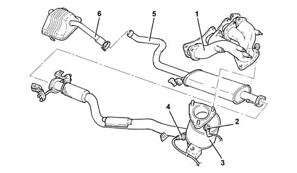
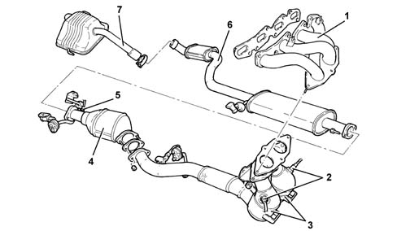
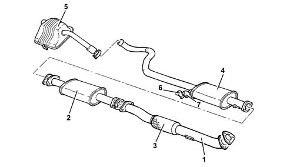
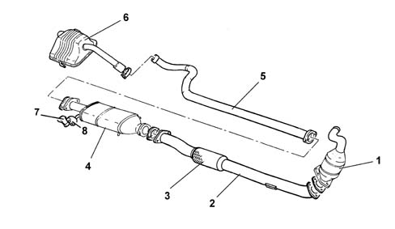

Introduction - EXHAUST PIPES AND SILENCERS
- Path
- Descriptions > 10 ENGINE > 1076 EXHAUST PIPES AND SILENCERS > Introduction - EXHAUST PIPES AND SILENCERS
- Kind
- system description
- Applies to
- engines: 1.6 TS, 2.0 TS, 1.9 JTD 8V, 1.9 JTD 16V; all production periods
- Interactive page
- https://sloeber94.github.io/elrnDB-a147/en/#/3026088
Applies to: engines: 1.6 TS; all production periods; only with equipment: 103 CV
CONSTRUCTION FEATURES
The exhaust gases flow into the (cast iron) manifold and from there to the three-way catalytic converter 1080 EXHAUST EMISSION CONTROL SYSTEM' flanged directly to the exhaust manifold.
The remaining exhaust pipe consists of a centre silencer and a rear silencer.
The mounting for the entire exhaust pipe consists of flexible supports, secured to the underbody, which, in addition to supporting the pipe, are designed to restrict the transmission of vibrations.
Special guards limit the radiation of heat towards the bodyshell.

1 - Manifold 2 - Front catalyzer Lambda sensor 3 - Exhaust pipe with catalyzer 4 - Rear catalyzer Lambda sensor 5 - Centre exhaust pipe 6 - Rear exhaust pipe
The ECE PHASE 3 regulations make provision for even stricter exhaust emission controls; for this reason it has been necessary to review the engine management strategy 1056 PETROL INJECTION SYSTEM'.
The exhaust pipe has been modified with the addition of a second Lambda sensor.
Applies to: engines: 1.6 TS; all production periods; only with equipment: 120 CV
CONSTRUCTION FEATURES
The exhaust gases flow into two double (steel) manifolds and then to two three-way precatalyzers which are connected to a single pipe and from there to a main catalyzer.
The remain exhaust pipe consists of a centre silencer and a rear silencer.
The entire exhaust pipe mounting consists of flexible supports, secure to the underbody, which, in addition to supporting the pipe, are designed to restrict the transmission of vibrations.
Special guards limit the radiation of heat towards the bodyshell.

1 - Exhaust manifold 2 - 2 Lambda sensors upstream of the pre-catalyzers 3 - 2 pre-catalyzers 4 - Main catalyzer 5 - Lambda sensor downstream of (main) catalyzer 6 - Centre exhaust pipe 7 - Rear exhaust pipe
The ECE PHASE 3 regulations make provision for even stricter exhaust emission controls; this the reason that it has been necessary to review the engine managment strategey 1056 PETROL INJECTION SYSTEM. As a result, the exhaust pipe has been modified with the addition of two pre-catalyzers and two Lambda sensors.
The specifications of the pre-catalyzers are the same as those for the main catalyzer.
Applies to: engines: 2.0 TS; all production periods
CONSTRUCTION FEATURES
The engine exhaust gases flow into two double (steel) manifolds and then to two three-way pre-catalyzers which, connected to a single pipe, flow into a main catalyzer.
The remaining exhaust pipe consists of a centre silencer and a rear silencer.
The mounting for the entire exhaust pipe consists of flexible supports, secured to the underbody, which, in addition to supporting the pipe are designed to restrict the transmission of vibrations.
Special guards limit the radiation of heat towards the bodyshell.
1 - Exhaust manifold 2 - 2 Lambda sensors upstream of the pre-catalyzers 3 - 2 pre-catalyzers 4 - Main catalyzer 5 - Lambda sensor downstream of (main) catalyzer 6 - Centre exhaust pipe 7 - Rear exhaust pie
The ECE PHASE 3 regulations make provision for even stricter exhaust emission controls; for this reason it has been necessary to review the engine management strategy 1056 PETROL INJECTION SYSTEM. As a result, the exhaust pipe has been modified with the addition of two pre-catalyzers and two Lambda sensors.
The specifications of the pre-catalyzers are the same as those for the main catalyzer.
Applies to: engines: 1.9 JTD 8V; all production periods
COMPOSITION
Structure
The engine exhaust gases flow through the manifold to the turbocharger and then via a pipe (1) to the oxidizing catalytic converter (2) (1080B exhaust emission control system).
At the front of the exhaust pipe, there is a flexible component (3) for limiting the transmission of vibrations.
The section of the exhaust comprises an intermediate pipe (4) and the rear silencer (5).
Special guards limit the radiation of heat towards the bodyshell.
The various components are supported by mountings (6) and rubber rings (7) secured to the underbody.

Applies to: engines: 1.9 JTD 16V; all production periods
COMPOSITION
Structure
The engine exhaust gases flow through the manifold to the turbocharger and then via a pipe (1) to the oxidizing catalytic converter (2) (1080B exhaust emission control system).
At the front of the exhaust pipe, there is a flexible component (3) for limiting the transmission of vibrations.
The section of the exhaust comprises an intermediate pipe (4) and the rear silencer (5).
Special guards limit the radiation of heat towards the bodyshell.
The various components are supported by mountings (6) and rubber rings (7) secured to the underbody.
